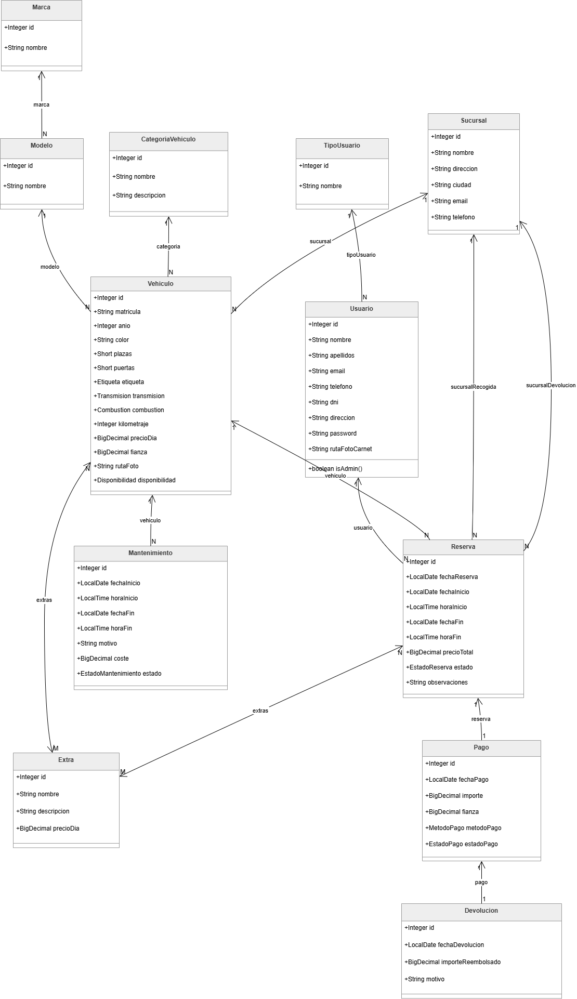
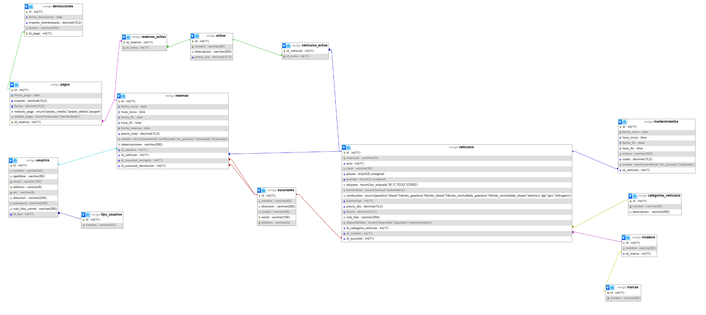
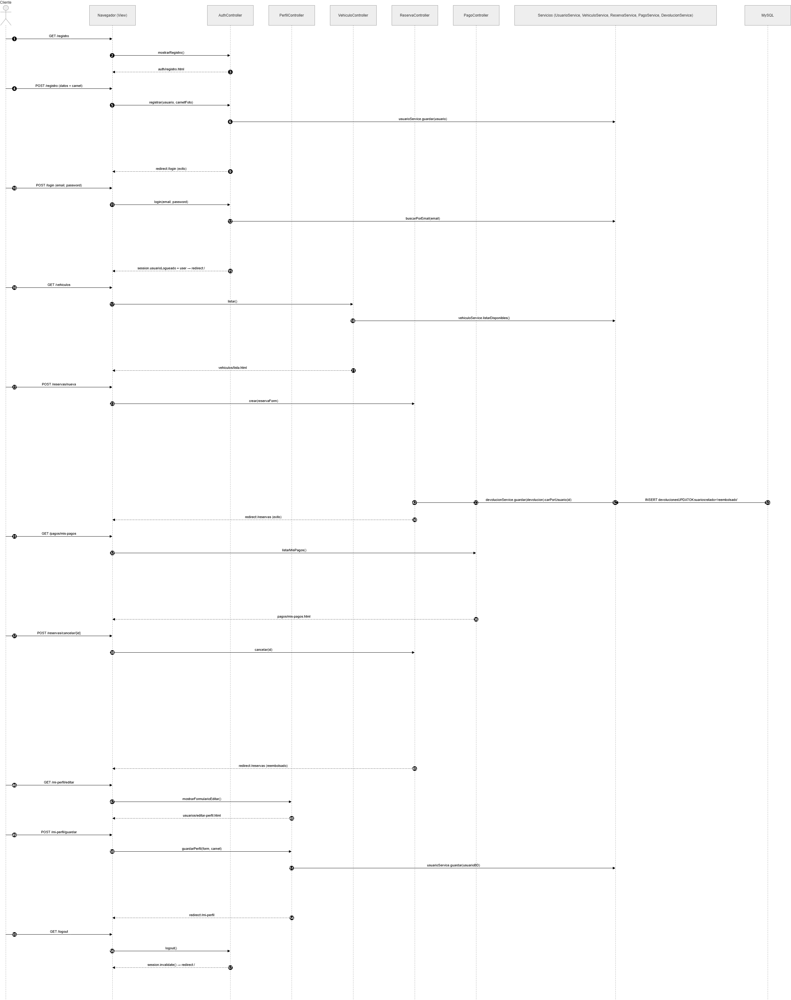
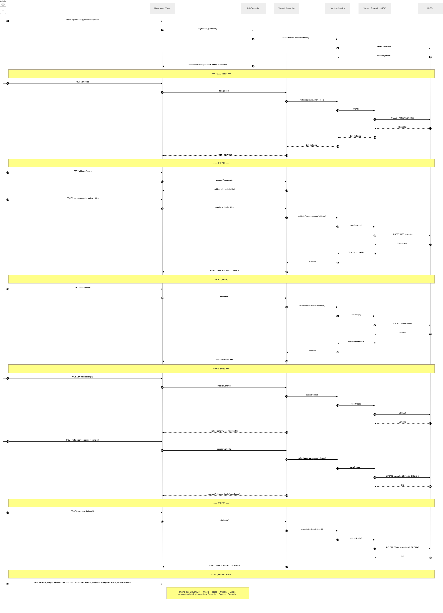

Proyecto Final DAM · 2025 / 2026
RentGo
Sistema de Gestión de Alquiler de Vehículos
Documentación Técnica
Arquitectura · Backend · Frontend · Base de Datos · Despliegue
Sección 1
Descripción del Proyecto
RentGo es una aplicación web de gestión integral de alquiler de vehículos, desarrollada como Trabajo de Fin de Grado del ciclo superior de Desarrollo de Aplicaciones Multiplataforma (DAM).
El sistema permite a los clientes consultar el catálogo de vehículos disponibles, realizar reservas online, gestionar sus pagos y ver el historial de alquileres. Los administradores disponen de un panel completo para gestionar toda la operativa del negocio.
🚗
Objetivo principal: digitalizar y automatizar la gestión de una empresa de alquiler de vehículos, mejorando la experiencia del cliente y optimizando la operativa interna.
Funcionalidades Principales
👤 Portal Cliente
- Registro y autenticación de usuarios
- Exploración del catálogo de vehículos con filtros por categoría, precio y disponibilidad
- Proceso de reserva con selección de fechas, horas y extras opcionales
- Gestión de pagos (tarjeta, PayPal)
- Historial de reservas y devoluciones
- Edición del perfil de usuario y carnet de conducir
🔧 Panel de Administración
- CRUD completo de: vehículos, marcas, modelos, categorías, sucursales y extras
- Gestión de reservas: aprobación, cancelación y seguimiento
- Planificación de mantenimientos con validación de fechas y solapamiento
- Gestión de usuarios y tipos de usuario
- Control de pagos y devoluciones
Alcance del Sistema
| Módulo | Entidades | Estado |
|---|
| Usuarios y Autenticación | Usuario, TipoUsuario | ✔ Completo |
| Catálogo de Vehículos | Vehiculo, Marca, Modelo, Categoría | ✔ Completo |
| Reservas | Reserva, Extra, ReservaExtra | ✔ Completo |
| Pagos y Devoluciones | Pago, Devolucion | ✔ Completo |
| Mantenimientos | Mantenimiento | ✔ Completo |
| Sucursales | Sucursal | ✔ Completo |
Sección 2
Tecnologías Utilizadas
Stack Tecnológico
| Capa | Tecnología | Versión | Rol |
|---|
| Lenguaje |
Java |
25 |
Lenguaje principal del backend |
| Framework |
Spring Boot |
4.0.4 |
Framework web MVC y gestión de componentes |
| ORM |
Spring Data JPA + Hibernate |
— |
Mapeo objeto-relacional y acceso a datos |
| Base de Datos |
MySQL |
8.0 |
Almacenamiento persistente de datos |
| Motor de Plantillas |
Thymeleaf |
3.x |
Renderizado server-side del HTML |
| CSS Framework |
Bootstrap |
5.3 |
Diseño responsive y componentes UI |
| Validación |
Jakarta Bean Validation |
3.x |
Validación de formularios y entidades |
| Build |
Apache Maven |
3.x |
Gestión de dependencias y compilación |
| Contenedor |
Docker + Docker Compose |
— |
Contenerización y orquestación |
| Proxy inverso |
Nginx |
1.29 |
Enrutamiento de peticiones HTTP/HTTPS |
| Control de versiones |
Git + GitHub |
— |
Repositorio y versionado del código |
Dependencias Maven Clave
spring-boot-starter-web → Servidor web embebido (Tomcat)
spring-boot-starter-thymeleaf → Motor de plantillas HTML
spring-boot-starter-data-jpa → Capa de persistencia con Hibernate
spring-boot-starter-validation → Validación con anotaciones
mysql-connector-j → Driver JDBC para MySQL
spring-boot-devtools → Recarga automática en desarrollo
Herramientas de Desarrollo
- IntelliJ IDEA — IDE principal
- MySQL Workbench — Diseño y administración de la base de datos
- Postman — Pruebas de endpoints HTTP
- draw.io — Elaboración de diagramas técnicos
- GitHub — Repositorio remoto y control de versiones
Sección 3
Arquitectura del Sistema
RentGo sigue el patrón de arquitectura MVC (Modelo-Vista-Controlador) implementado sobre Spring Boot, con una separación clara en capas que facilita el mantenimiento y la escalabilidad.
Patrón MVC en Spring Boot
🗂️ Modelo (Model)
Entidades JPA que representan las tablas de la base de datos. Cada entidad mapea directamente una tabla mediante anotaciones como @Entity, @Table y @Column. Ejemplos: Vehiculo, Reserva, Usuario.
👁️ Vista (View)
Plantillas HTML procesadas por Thymeleaf. Se dividen en templates reutilizables (fragments) y páginas específicas por módulo. Bootstrap 5 proporciona el diseño responsive.
🎮 Controlador (Controller)
Clases anotadas con @Controller que reciben las peticiones HTTP, invocan los servicios necesarios, añaden datos al modelo y retornan el nombre de la vista Thymeleaf.
⚙️ Servicio (Service)
Capa intermedia con la lógica de negocio. Clases anotadas con @Service que encapsulan las operaciones sobre los repositorios y aplican validaciones de negocio.
Flujo de una Petición HTTP
1
Petición del Navegador
El usuario interactúa con la UI. El navegador envía una petición HTTP al servidor (GET o POST).
2
Nginx (Proxy Inverso)
En producción, Nginx recibe la petición y la redirige al contenedor Spring Boot en el puerto 8080.
3
DispatcherServlet → Controller
Spring MVC enruta la petición al método del controlador correspondiente según la URL y el método HTTP.
4
Service → Repository → MySQL
El controlador llama al servicio, que utiliza el repositorio JPA para consultar o modificar la base de datos.
5
Thymeleaf renderiza la respuesta
El controlador añade los datos al Model y retorna el nombre de la plantilla. Thymeleaf genera el HTML final.
Estructura de Paquetes
com.ilerna.rentgo/
├── controller/ → Controladores MVC (uno por entidad)
├── model/ → Entidades JPA
├── repository/ → Interfaces JpaRepository
├── service/ → Lógica de negocio
└── config/ → WebConfig (recursos estáticos, etc.)
Sección 4
Instrucciones de Despliegue
Requisitos Previos
- Java 25+ instalado en el sistema
- MySQL 8.0 en ejecución (local o Docker)
- Maven 3.x o usar el wrapper incluido (
./mvnw)
- Docker y Docker Compose (para despliegue en servidor)
- Git para clonar el repositorio
Despliegue en Local (Desarrollo)
1
Clonar el repositorio
git clone https://github.com/pompito088-stack/rentgo.git
2
Crear la base de datos
Ejecutar en MySQL: primero ini_db.sql (crea las tablas) y luego data.sql (carga los datos).
3
Configurar application.properties
Ajustar la URL de la base de datos, usuario y contraseña en src/main/resources/application.properties.
4
Compilar y ejecutar
./mvnw spring-boot:run — La aplicación arranca en http://localhost:8080
Despliegue en Servidor (Producción con Docker)
1
Conectar al servidor por SSH
ssh usuario@servidor -p 2213
2
Clonar / actualizar el repositorio
git clone https://github.com/pompito088-stack/rentgo.git o git pull origin main
3
Levantar los contenedores
docker compose up -d --build — Construye la imagen y arranca app + MySQL.
4
Cargar los datos iniciales en Docker
docker exec -i rentgo-db mysql -u root -ppassword rentgo < ini_db.sql
docker exec -i rentgo-db mysql -u root -ppassword rentgo < data.sql
5
Nginx enruta el tráfico
El proxy inverso Nginx redirige las peticiones del dominio público al puerto 8080 del contenedor Spring Boot.
⚠️ Nota importante: Las imágenes de vehículos y carnets se sirven desde el volumen Docker montado en /app/img/. Asegúrate de que las imágenes estén presentes en el servidor antes del primer arranque.
Sección 5
Diagrama de Clases
El siguiente diagrama muestra las principales entidades del sistema y sus relaciones, reflejando la estructura de clases Java anotadas con JPA.

Figura 1 — Diagrama de Clases del sistema RentGo
Relaciones Principales
| Entidad Origen | Relación | Entidad Destino | Descripción |
|---|
| Vehiculo | ManyToOne | Modelo | Un vehículo pertenece a un modelo |
| Modelo | ManyToOne | Marca | Un modelo pertenece a una marca |
| Vehiculo | ManyToOne | CategoriaVehiculo | Un vehículo tiene una categoría |
| Reserva | ManyToOne | Usuario | Una reserva la hace un usuario |
| Reserva | ManyToOne | Vehiculo | Una reserva es sobre un vehículo |
| Reserva | ManyToMany | Extra | Una reserva puede tener varios extras |
| Pago | OneToOne | Reserva | Cada reserva tiene un pago asociado |
| Devolucion | OneToOne | Pago | Una devolución se asocia a un pago |
| Mantenimiento | ManyToOne | Vehiculo | Un mantenimiento afecta a un vehículo |
Sección 6
Modelo Entidad-Relación (ER)
El modelo ER representa el esquema de la base de datos relacional utilizada por RentGo, implementada en MySQL 8. Cada entidad corresponde a una tabla y las relaciones se implementan mediante claves foráneas.
.png)
Figura 2 — Modelo Entidad-Relación de la base de datos RentGo
Modelo Relacional

Figura 3 — Modelo Relacional de la base de datos RentGo
Tablas Principales
| Tabla | PK | Descripción |
|---|
usuarios | id_usuario | Clientes y administradores del sistema |
vehiculos | id_vehiculo | Flota de vehículos disponibles para alquilar |
reservas | id_reserva | Reservas realizadas por los clientes |
pagos | id_pago | Pagos asociados a cada reserva |
devoluciones | id_devolucion | Reembolsos por cancelaciones |
mantenimientos | id_mantenimiento | Planificación de mantenimientos de vehículos |
sucursales | id_sucursal | Oficinas de recogida y devolución |
extras | id_extra | Servicios adicionales contratables |
Sección 7
Diagramas de Secuencia
Los diagramas de secuencia muestran la interacción entre los actores del sistema y los componentes internos para los flujos más importantes.
Secuencia: Flujo del Cliente

Figura 4 — Diagrama de secuencia del flujo del cliente (registro → reserva → pago)
Secuencia: Flujo del Administrador

Figura 5 — Diagrama de secuencia del flujo del administrador (gestión de reservas y mantenimientos)
Descripción de los Flujos
Flujo Cliente — Proceso de Reserva
- El cliente accede al catálogo y selecciona un vehículo disponible.
- Elige fechas de inicio y fin, horas de recogida y devolución.
- Añade extras opcionales (GPS, silla infantil, seguro premium...).
- Confirma la reserva; el sistema verifica disponibilidad y crea el registro.
- Se genera el pago y el vehículo queda marcado como no disponible en esas fechas.
- El cliente recibe confirmación en su área personal.
Flujo Administrador — Gestión de Mantenimientos
- El admin accede al panel de mantenimientos.
- Selecciona el vehículo y las fechas/horas del mantenimiento.
- El sistema valida que la fecha no sea anterior a hoy y que no haya solapamiento con reservas activas.
- Si pasa la validación, el mantenimiento queda registrado y el vehículo bloqueado para esas fechas.
- El estado del mantenimiento se calcula automáticamente: pendiente, en proceso o finalizado.